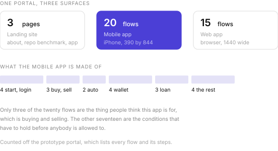
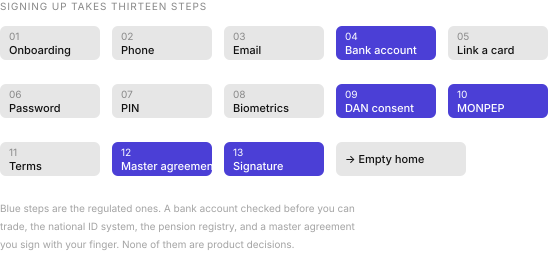
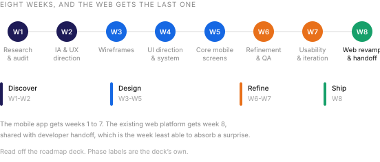

Money Market Fund
2026
I designed three surfaces and 38 flows, and got stakeholder sign-off by having them click through a working app rather than swipe a slide deck. Development has not started.1
Not a mockup
What I handed stakeholders was not a Figma prototype. I built a React application: one HTML entry point, 22 JSX modules, every screen real, every field typable, every transition wired. A query string picks which of the 38 flows you land in.
That choice is the case study. A money market fund is not a product you can evaluate by looking at pictures of it. The question a stakeholder actually has is whether a person can get from never having heard of this to owning a certificate, and the only honest way I could answer it was to hand them a phone and watch.
I went further than that. Finishing the registration flow lands you on an empty home screen. Finishing the login flow lands you on a home screen with holdings. I modelled the difference between a new account and a used one, which is the state most demos quietly skip because it is the least flattering.
Three surfaces, 38 flows

The landing site is three pages. The mobile app is twenty flows. The web app is fifteen, and I did not make it a shrunk copy of the phone: I built the dashboard, the filtering and the transaction history for a browser, because someone reviewing a portfolio at a desk wants different things from someone topping up on a bus.
Thirteen steps to an account

Phone, email, password, PIN and biometrics are the ordinary part. The rest is what selling regulated investments to the public costs: a bank account verified before you can trade, consent through DAN, the national digital identity system, a MONPEP check, a master agreement, and a signature you draw with your finger.
I could not design thirteen steps down to four. I could only decide what order they come in, which ones can wait, and whether the person still understands what they are agreeing to by step eleven.
Seventeen flows before you can buy
Three of the twenty mobile flows are the thing people think this app is for. Buy on the primary market, buy on the secondary market, sell.
The other seventeen are the conditions that have to hold first. Getting money in, through QPay or a transfer from one of four banks. Getting money out. Linking a card. Reading a contract. Borrowing against what you hold, then closing that loan or paying part of it. Finding out why a number changed.
The automatic investment builder is nine steps on its own: type, term, unit count, frequency, payment day, end date, a projection, a priority order across seven or eight products, a funding source, a name, a review, a PIN. I let it be the most elaborate flow in the app because it exists so that the other flows stop being necessary.
The number I flagged
The primary market list shows nine open issuances. A bank certificate at 12.5% over six months. Another at 14.5% over twelve. And a non-bank financial institution at 23.0%.2
Each card carries the issuer, the ticker, the instrument type, the yield, the term, the par value and how much is left. What no card carries yet is a signal of risk. The only number set in large type is the yield, and 23.0 is a bigger number than 12.5.
The instrument type is the signal, in small grey text, and it assumes the reader knows that a trust from a non-bank lender is a different proposition from a bank certificate. Some will. The people this app is trying to reach, who are new to investing and arriving from an onboarding screen that promised short-term investing made simple, mostly will not.
I flagged it in the sign-off notes. I am not going to remove the 23%. In the next pass I want the card to say what it is buying.
Improving the web platform
The mobile app is new. The web platform already existed, and improving something that already exists is a different job from drawing something that does not.
I scoped the work as six things. An audit of the existing web UX. A visual refresh. Alignment to the design system. A rebuilt dashboard and transaction experience. Developer handoff. And a loan flow, which I wrote down with a question mark next to it, because nobody had decided yet whether it belonged in this phase.3
I put the audit first, in week one, next to a competitor benchmark of lending apps and a set of risk and compliance notes. The ordering mattered to me. You cannot refresh the visuals of a financial platform until you know which of its awkward bits are bad design and which are a regulator’s requirement wearing bad design as a disguise.
A visual refresh that quietly removes a disclosure is not a refresh. It is a compliance incident with better typography.
The binding constraint I set was the design system. One set of tokens, components, forms, tables and financial cards, shared across mobile and web, with Oswald for headings and Inter for body text, which I chose for legibility at small sizes. That is what stops the web from becoming a shrunken phone or a museum of the old product.
Five principles, and the one to hold
I set out five principles in the deck. Trust before action, reassure people before asking them for a decision or for money. Clarity over complexity, plain language for financial concepts. Risk transparency, communicate risk honestly and visibly. Fast decision-making, less friction in the core money flows. Cross-platform consistency, one experience across mobile and web.
Four of those are the usual good intentions and hard to argue with. The third one is the expensive one, and it is the one the primary market card is not yet keeping. A list that sets 12.5% and 23.0% in the same weight is communicating return visibly and risk not at all. I wrote the principle down. Now I have to make the screen catch up with it.
The web gets week eight

This is the part of my own plan I am least comfortable with. The web revamp sits in week eight, alongside developer handoff, in a phase called Ship. Handoff weeks are the least able to absorb a surprise, and an audit of an existing platform is the single most likely place for one to turn up.
I can defend it. The design system is built by week four, so by week eight the web work is mostly application rather than invention, and doing it last means it inherits everything the mobile screens learned in usability testing. That is a real argument and it only holds if the week one audit finds nothing structural.
Either way, I named the risk while the plan was still a plan, which is most of the value of writing a roadmap down. The version stakeholders approved has the audit in week one for exactly that reason: whatever the web platform turns out to need, we know in week one rather than week eight.
- The prototype documents every flow and its steps, which is where the counts on this page come from.
- Those figures are what the prototype displays, and may be illustrative rather than live issuances. The design point holds either way: whatever the real spread turns out to be, the card has to carry more than the yield.
- A question mark in a scope list is worth more than it looks. It is somebody being honest in writing that a decision has not been made, which is rarer than it should be and much cheaper than finding out in week seven.